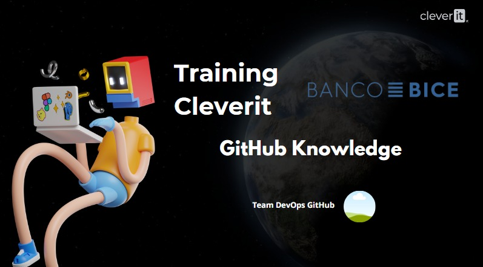

GitHub KnowLedge 🐳
Creado por
Team DevOps GitHub
&
CleverIT
## Permisos - Organización - Públicos • Propietario - Propietario • Administrador - Colaborador • Facturación - Miembro. --- ## Roles - Organization owners - Organization members - Organization moderators - Billing managers - Security managers (beta) - GitHub App managers - Outside collaborators --- ### Github Page Las GitHub Pages son páginas web públicas que se publican a través de GitHub Existen 3 tipos de GH-Pages - De repositorio - De usuario - http(s)://<username>.github.io - De Organización - http(s)://<organization>.github.io --- ### Github Page Las GitHub Pages son páginas web públicas que se publican a través de GitHub Existen 3 tipos de GH-Pages - De repositorio: Se crean a partir de una rama o workflow(Beta) - De usuario: Se crean desde un repositorio con el mismo nombre del usuario http(s)://<username>.github.io - De Organización: Se crean desde un repositorio con el mismo nombre de la organización http(s)://<organization>.github.io --- ### Github Page  --- ### Github Page  --- ### Github Page Aquí podremos seleccionar si deseamos desplegar nuestro sitio: •Desde una rama en el repositorio Desde una actionde github(beta)  --- ### GitHub Pages: Limitaciones GitHub Pages es una excelente herramienta para desplegar sitios web estáticos directamente desde tus repositorios de GitHub. Sin embargo, es fundamental tener en cuenta algunas limitaciones: - **Tamaño del Sitio:** Los sitios publicados no pueden exceder 1GB de almacenamiento. - **Ancho de Banda:** Dispones de un ancho de banda flexible de 100GB por mes para el tráfico de tu sitio. --- ### Ramas Protegidas Se pueden proteger las ramas que se deseen configurando reglas de protección donde se define quien puede hacer forcepushy establecer requerimientos para escribir en la rama. Las configuraciones que uno puede establecer son: - Require pull request reviews before merging •Require status checks before merging - Require conversation resolution before merging •Require signed commits - Require linear history - Require merge queue - Require deployments to succeed before merging •Do not allow bypassing the above settings •Restrict who can push to matching branches •Allow force pushes - Allow deletions --- ### Require pull request reviews before Merging Se puede establecer que los Pull Request reciban una cantidad mínima de revisiones de aprobación antes de que se fusionen los cambios. --- ### Require conversation resolution before merging Se requerirá que antes de fusionar los cambios, exista una conversación entre los participantes del pullrequest, esto para asegurarse de que todas las personas están consientes del cambio. --- ### Requirelinear history Esta configuración previene la ejecución de mergecommithacia la rama protegia, esto significa que solo se podrán usar squash mergeo rebase merge. Un historial linear puede ayudar a los equipos a reversar los cambios --- ### Require merge queue (beta) Una cola de combinación puede aumentar la velocidad a la que se combinan las solicitudes de incorporación de cambios en una rama de destino muy activa, a la vez que garantiza que se superen todas las comprobaciones de --- ### Require deployments to succeed before Se puede requerir que antes de fusionar los cambios sea necesario que primero se logre un despliegue exitoso en un ambiente. --- ### Restrict who can push to matching Se puede establecer una serie de personas equipos o apps que podrán hacer pusha la rama protegida. --- ### ONE BRANCH Enables parallel development where developers can work separately from the master branch on features where a feature branch is created from the master branc. --- ### One branch / Gitflow Ventajas Ramas sencillas y separadas para propósitos específicos con una convención de nomenclatura adecuada It is also ideal when handling multiple versions of the production code. --- ### Gitflow Ventajas, Enfoque simple y liviano para gestionar el desarrollo. Cumple las siguientes pautas al administrar el control de fuente con una única rama primaria. --- ## GitHub Actions ### Features 1. Almacenados como archivos YAML 2. Integrados con eventos de GitHub 3. Registros en vivo y visualización de flujos de trabajo 4. Acciones impulsadas por la comunidad 5. Ejecutores autohospedados o hospedados por GitHub 6. Almacenamiento secreto integrado --- ## GitHub Actions Policies 1. Establecer políticas a nivel de empresa/organización/repositorio 2. Opciones incluyen permisos permitidos, período de retención de artefactos, ejecución de flujos de trabajo desde bifurcaciones y permisos para `GITHUB_TOKEN` --- ## Compartir flujos de trabajo - Utilizar plantillas de inicio de GitHub Actions - Compartir acciones mediante GitHub Packages y `ghcr.io` (contenedores) - Aprovechar la ejecución de flujos de trabajo de la organización (próximamente) --- ## GitHub Marketplace - Explorar y utilizar acciones desde el mercado - Beneficios incluyen acciones diversas para varios propósitos - Extiende la funcionalidad fácilmente --- 1. Utilizar `GITHUB_TOKEN` siempre que sea posible 2. Limitar los permisos del token 3. Ejecutar acciones de confianza 4. Proteger secretos con entornos 5. Crear flujos de trabajo de inicio reutilizables 6. Proporcionar README detallados para acciones personalizadas --- - Participar en la comunidad GitHub - Aprender de los flujos de trabajo y acciones de otros - Compartir tus flujos de trabajo y contribuir al ecosistema --- ## Recursos Adicionales - [Roles de GitHub](https://docs.github.com/en/organizations/managing-peoples-access-to-your-organization-with-roles/roles-in-an-organization) - [GitHub Pages](https://docs.github.com/en/pages) - [Reglas de Protección de Ramas](https://docs.github.com/en/repositories/configuring-branches-and-merges-in-your-repository/defining-the-mergeability-of-pull-requests/about-protected-branches) - [Documentación de GitHub Actions](https://docs.github.com/en/actions) --- ## Preguntas y Respuestas !Gracias! --- # Training BICE - [Cultura DevOps](culturaDevOps.html) - [GitHub Knowledge](./githubKnow.html) - [Git & Github](git-github.html) - [Hand-ON](#elemento-4) </section>